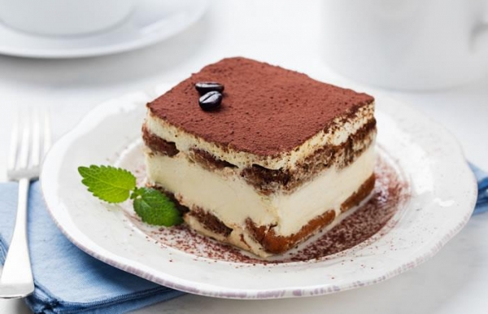

Tiramisu

The Tiramisu is an Italian dessert.
It is made of ladyfingers (savoiardi) dipped in coffee, layered with a whipped mixture of eggs, sugar, and mascarpone cheese,
flavoured with cocoa.
Ingredients
- 2 cups strong black coffee
- 1/2 cup marsala
- 3 eggs, separated
- 1/3 cup caster sugar
- 250 mascarpone
- 300 ml thickened cream, lightly whipped
- 1 large packet of sponge finger biscuits (savoiardi)
- Cocoa powder, for dusting
Steps
- Pour coffee and marsala into a shallow dish. Set aside.
- Beat egg yolks and sugar in a large bowl with electric beaters until pale and thick.
Add the mascarpone and whipped cream, mixing gently until just combined.
- Beat egg whites in a medium bowl with electric beaters until soft peaks form.
Using a large metal spoon, gently fold eggwhites into mascarpone mixture.
- Dip enough biscuits into coffee mixture to cover the base of a 19cm square ceramic dish.
Cover the biscuits with one-third of the mascarpone mixture. Repeat layers 2 times, ending with the cream.
Cover with plastic wrap and refrigerate for at least 2 hours. Dust generously with cocoa powder and serve.
- Variation: Marsala can be replaced with orange juice if preferred.
Back to homepage